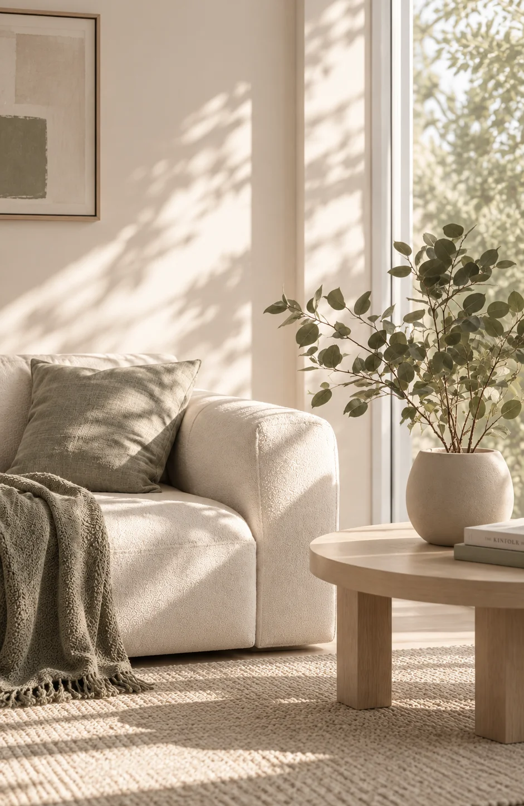

Um espaço para se escutar, se compreender e construir novos caminhos.
Psicoterapia para crianças e adultos, com uma escuta acolhedora e individualizada, orientada pela Terapia Cognitivo-Comportamental.
Quem sou eu?
Sou Ana Luiza Beraldo, psicóloga clínica, mãe de duas meninas lindas, esposa, filha e amiga.
Escolhi a Psicologia porque acredito profundamente no valor do encontro. Na possibilidade de, através da escuta e do acolhimento, ajudar alguém a olhar para si com mais compreensão e construir novas formas de lidar com a própria história.
Ao longo da minha trajetória, tive a oportunidade de acompanhar crianças, adultos e pessoas neurodivergentes, experiências que ampliaram meu olhar para a singularidade de cada pessoa e de cada processo. Acredito em uma Psicologia que respeita a individualidade, que não oferece respostas prontas e que entende que cada pessoa precisa ser compreendida dentro da sua própria história. É isso que busco levar para cada atendimento: conhecimento, cuidado, acolhimento e uma escuta genuína.
Escolhi a Psicologia porque acredito profundamente no valor do encontro: acolher e ajudar cada pessoa a olhar para si com mais compreensão e construir novas formas de lidar com a própria história.
Acompanho crianças, adultos e pessoas neurodivergentes, com um olhar atento à singularidade de cada trajetória, unindo conhecimento, cuidado e uma escuta genuína.
A clínica para mim
Acredito que não existe receita pronta para o cuidado psicológico. Cada pessoa é única, assim como sua história, suas experiências e a maneira como percebe e se relaciona com o mundo. Por isso, acredito que o processo terapêutico também precisa ser construído de forma singular.
Minha prática é orientada pela Terapia Cognitivo-Comportamental e parte de um princípio que considero essencial: antes de qualquer técnica, existe uma pessoa que precisa ser escutada, sem julgamentos. Prezo por uma escuta acolhedora e um espaço em que seja possível falar sobre aquilo que, muitas vezes, é difícil colocar em palavras. Para mim, a psicoterapia é um espaço de autoconhecimento, construção de novos caminhos, equilíbrio emocional e desenvolvimento de uma relação mais compassiva consigo mesmo.
Acredito que não existe receita pronta para o cuidado psicológico. Cada pessoa é única, e o processo terapêutico precisa ser construído de forma singular.
Minha prática é orientada pela Terapia Cognitivo-Comportamental, priorizando uma escuta acolhedora e sem julgamentos — um espaço seguro para autoconhecimento, equilíbrio emocional e novos caminhos.
“Poder estar presente diante de questões tão profundas e íntimas, oferecendo escuta, acolhimento e cuidado, é o que faz da clínica uma parte tão significativa de quem sou.”
Para quem é a minha clínica?
Um olhar atento, humanizado e individualizado para as diferentes fases e necessidades da vida.
Crianças
Atendimento infantil considerando as particularidades de cada fase do desenvolvimento, com participação e orientação da família quando necessário.
Adultos
(jovens e idosos)Psicoterapia voltada às diferentes demandas emocionais, autoconhecimento e aos desafios presentes em cada momento da vida.
Pessoas Neurodivergentes
Atendimento individualizado, considerando as particularidades e necessidades de cada pessoa. Experiência com pessoas autistas com necessidade de suporte 1, tanto na infância quanto na vida adulta.

Experiência Clínica
Minha trajetória inclui experiências em atendimento psicoterapêutico individual e em grupos terapêuticos, com crianças, adultos (jovens e idosos) e pessoas neurodivergentes.
Também tive experiência em contexto de saúde mental, acompanhando diferentes demandas psicológicas e participando de discussões e supervisões de casos em equipe multiprofissional. Essa experiência contribuiu para a construção de um olhar clínico atento às particularidades de cada pessoa e à complexidade de sua história.
Experiência em atendimento individual e em grupos terapêuticos com crianças, adultos e pessoas neurodivergentes.
Atuação em saúde mental e supervisão de equipe multiprofissional, proporcionando um olhar clínico atento à singularidade e à história de cada paciente.
Modalidades
Flexibilidade e conforto com o mesmo rigor ético, atenção e cuidado.
Atendimento Presencial
Atendimentos presenciais em consultório, em um ambiente reservado, acolhedor e seguro.
Atendimento Online
Atendimentos por videochamada, com a mesma atenção, ética, sigilo e cuidado do atendimento presencial.
Talvez o primeiro passo seja simplesmente ter um espaço para falar.
Um espaço para olhar para si com mais cuidado e, aos poucos, encontrar novas possibilidades para caminhar.